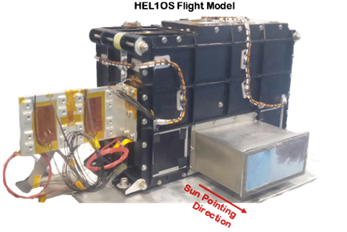
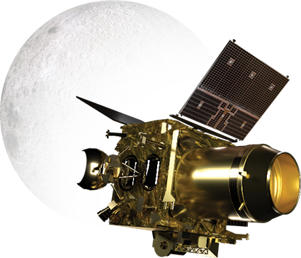
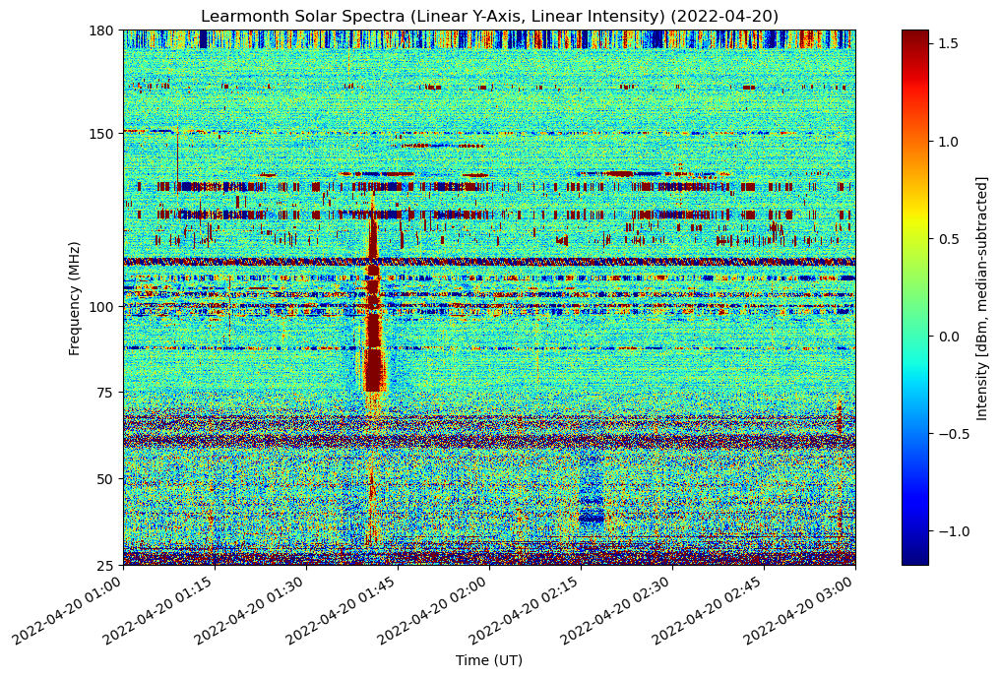
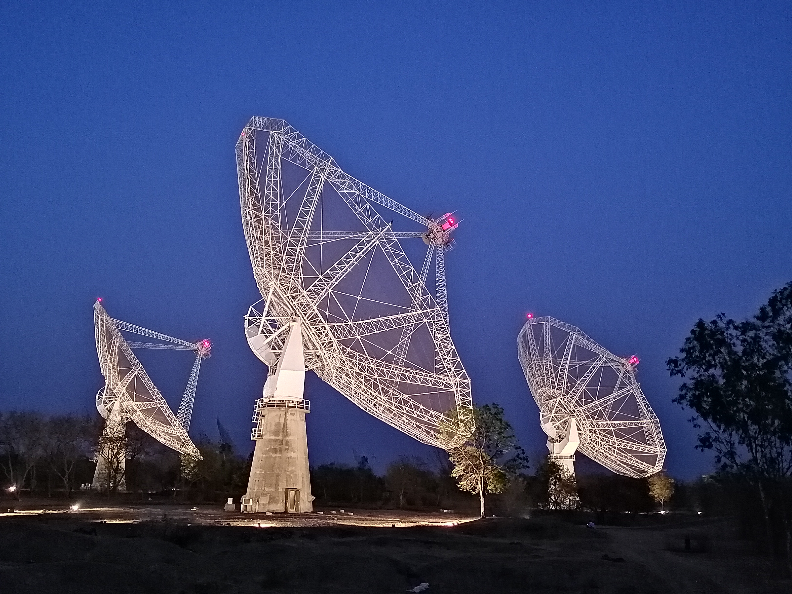
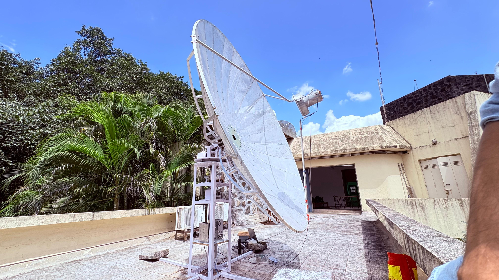
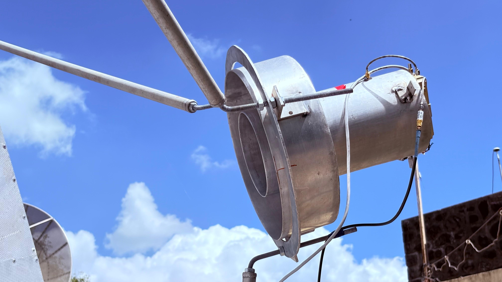

Gallery


Hello, I'm
I am an early-career astrophysics researcher working in Solar Radio Physics, Radio Astronomy Instrumentation, and High-Energy Solar Observations. My research focuses on Solar Radio Bursts, Solar flares, Space Weather and 21-cm Neutral Hydrogen observations.
• Solar Radio Bursts
• Solar Flare Physics
• Radio Astronomy Instrumentation
• Space Weather
• Radio Signal Processing
• Neutral Hydrogen (21-cm)
Studying Quasi-Periodic Pulsations using HEL1OS onboard Aditya-L1, and investigating solar radio bursts observed with Chandrayaan-2 XSM.
To develop advanced radio astronomy instrumentation and improve our understanding of solar eruptive phenomena, space weather, and radio emission mechanisms.
Statistical analysis of Type II, Type III and Moving Radio Bursts, their temporal evolution and association with solar flares.
Analysis of X-ray observations, flare energetics, spectral evolution, and Quasi-Periodic Pulsations.
Research using Chandrayaan-2 XSM, Aditya-L1 HEL1OS, GOES, Wind WAVES observations.
Development of SDR based radio telescopes, RF receiver systems, feedhorns, LNA, filters and telescope automation.
21-cm Galactic HI observations, spectral analysis, calibration, and telescope characterization.
Python, signal processing, scientific visualization, astronomical data analysis, automation and statistical methods.
Quasi-Periodic Pulsations Spectral Analysis Solar Flare Evolution High-Energy Solar Physics
Advisor Dr. Manju Sudhakar (URSC, ISRO)Solar Radio Bursts Moving Radio Bursts Flare Timing Space Weather
Advisor Dr. Anshu Kumari (PRL)
Studying quasi-periodic pulsations (QPPs), spectral evolution, and high-energy emission of solar flares using HEL1OS observations onboard Aditya-L1.
Advisor: Dr. Manju Sudhakar (URSC, ISRO)
Mentor: Mr. Mahadev A. V. (ARIES)

Performed a statistical investigation of solar radio bursts observed with Chandrayaan-2 XSM, focusing on flare timing, burst characteristics, and space weather implications.
Advisor: Dr. Anshu Kumari (PRL)

Correlation analysis using GOES X-ray observations and Wind/WAVES radio dynamic spectra to investigate Type III burst occurrence during major solar flares.
Advisor: Dr. Anshu Kumari

Reduced and calibrated GMRT observations using CASA to generate radio images and analyse the radio emission from the galaxy cluster Abell 3376.

Led the design and integration of a 3-m radio telescope operating at 1.42 GHz for solar and Galactic neutral hydrogen observations, including receiver development, automation, and calibration.
PI: Manish Hiray

Designed and optimized the feedhorn, low-noise amplifier, and band-pass filter for a dedicated radio astronomy receiver operating at the hydrogen line frequency.
Research articles in Solar Physics and Radio Astronomy.
Journal: Solar Physics (Springer)
Status: Revised Manuscript Submitted – Under Review
Impact Factor: 2.4
Journal: Solar Physics (Springer)
Status: Submitted – Under Review
Impact Factor: 2.4
Research article describing the design, receiver system, calibration, automation, and first observations using the automated radio telescope.
Advisor:
Dr. Manju Sudhakar,
URSC–ISRO
Mentor:
Mr. Mahadev A. V.,
ARIES
Solar Radio Bursts, Chandrayaan-2 XSM, Space Weather, Statistical Analysis
3-m Radio Telescope Receiver System Feedhorn Design GMRT Imaging
Student Coordinator Astronomical Observations Instrumentation
Fergusson College Savitribai Phule Pune University
CGPA: 8.12 / 10
Vivekanand College Shivaji University
CGPA: 9.66 / 10
Founded the Astronomy Research Club in Kolhapur to promote astronomy outreach, observational astronomy, and scientific awareness through lectures, workshops, and public observing sessions.
Coordinated observatory activities, student observing sessions, and astronomy events.
Student Coordinator for the Radio Astronomy School held at Fergusson College in February 2025.
Demonstrated the operation of the 5-m Radio Telescope, developed Python scripts for live data acquisition, visualization, and parameter extraction.
Organized astronomy camps, public lectures, stargazing sessions, and educational outreach activities in schools and colleges.
Presented interactive 3D Solar System and AGN Unification models during science exhibitions.
IUCAA Astronomy School
Fergusson College
Radio Astronomy Winter School